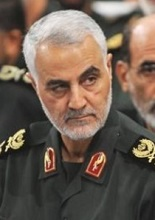
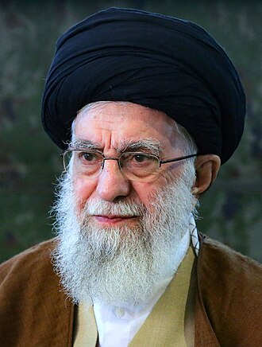

.png)
اخبار
آیا تابهحال فکر کردهاید که چرا اخبار فقط دربارهی جنگ، بلایای طبیعی، اعتصاب، مرگومیر و بهطورکلی همهی چیزهای بد است. درواقع شنیدن و دنبال کردن اخبار ما را از جهان هستی ناامید میکند؛ زیرا به این باور میرسیم که هیچ چیز خوبی در جهان وجود ندارد! پس چرا اینچنین پیگیرانه اخبار را دنبال میکنیم؟ چه نیرویی ما را وادار میکند که هر روز بعد از برخاستن از خواب، اخبار را چک کنیم و برای اطلاع از جدیدترین خبرها، به چندین منبع سر بزنیم؟ اعتیاد ما به پیگیری اخبار از کجا نشأت میگیرد؟ ممکن است یک مثال ذهن شما را روشنتر کند. فرض کنید که در خانه نشستهاید و قصد دارید استراحت کنید. یک نفر به شما میگوید: « چند نفر در خیابان فوتبال بازی میکنند و تیم قرمز دارد برنده میشود.» شخص دیگری میآید و به شما خبر میدهد: «دو نفر در خیابان با هم دعوا میکنند و خون و خونریزی به راه انداختهاند.» شما برای تماشای کدام یک از جای خود بلند میشوید؟ آلن دوباتن (Alain de Botton) با بیان مثالهای ریز و درشت در کتاب اخبار: راهنمای کاربر (The News: A User's Manual) ذهن شما را با چنین سؤالات و فرضیههایی به چالش میکشد. دوباتن از نگاه فلسفه، جامعهشناسی و روانشناسی به نقش اخبار نگاه میکند. او معتقد است ما بهسمت اخبار بد گرایش داریم؛ زیرا همهی ما در اعماق وجود خود بهطور ناخوشایندی غمگین و ناامید هستیم و مدام بهدنبال چیزی میگردیم که هیولای ناامید درونمان را تغذیه کند. البته او در کتاب اخبار: راهنمای کاربر، فقط بهدنبال نقد روزنامهها و خبرگزاریها و پیدا کردن چرایی گرایش ما بهسمت اخبار بد نیست. او در جایجای کتاب سعی دارد به این مسئله بپردازد که اخبار در دنیای ایدئال باید چگونه باشند؟ خبرها چگونه میتوانند نیازهای عمیق ما را برطرف کنند و زندگی بهتری در جهان رقم بزنند؟ دوباتن معتقد است کارکرد اصلی اخبار در این است که ما به انسانهای بهتری تبدیل شویم. مثلاً وقتی خبری راجعبه یک جنایت هولناک میخوانیم، متوجه میشویم عاقبت چنین کارهایی چیست؛ درنتیجه خودمان را بیشتر کنترل میکنیم. دوباتن باور دارد ما در هنگام خواندن اخبار، در حال تحقق اهداف پیچیدهی روانشناختی خود هستیم. مثلاً نیاز ما به تحسین باعث میشود که اخبار سلبریتیها را دنبال کنیم یا نیاز به دیده شدن و اعتمادبهنفس ما را بهسمت اخبار مد و زیبایی سوق میدهند. یکی دیگر از پیشنهادهایی که آلن دوباتن در کتاب مطرح میکند، این است که برای درگیر کردن مخاطب، بهتر است هنر را وارد روزنامهنگاری کنیم. برای مثال داستان خطی رمان «آنا کارنینا» یا «مادام بوواری» ممکن است آنچنان جذاب نباشد؛ اما تولستوی و فلوبر به گونهای این قصهها را پرورش دادهاند که خواننده درگیر شخصیتها میشود. البته دوباتن به این موضوع توجه نمیکند که هدف از روزنامهنگاری و هنر با هم متفاوت است. در سراسر کتاب اخبار: راهنمای کاربر، نویسنده به انواع مختلف خبر میپردازد و نقش آنها را در جامعه یادآور میشود. مثلاً اخبار سیاسی باید واقعیت را پوشش دهند و بیشازحد بر نکات منفی تأکید نکنند. یا تمرکز اخبار اقتصادی بر سرمایهگذاران نباشد و به مسائل کمتر توجهشدهای مانند داستان زندگی کارمندان یا کسبوکار بیشتر اشاره شود. درواقع دوباتن معتقد است که اخبار باید نقش مثبتتری در زندگی ما داشته باشند، همدلی ما را بیشتر کنند و تصویری درست از واقعیت ترسیم نمایند. کتاب اخبار: راهنمای کاربر نثری ساده دارد و همه میتوانند آن را بخوانند و متوجه شوند. شاید بعضی از عقاید نویسنده موردقبول همه نباشد؛ اما بعد از مطالعهی این کتاب ذهنتان نسبتبه اخباری که میخوانید، حساستر خواهد شد و هر چیزی را بهعنوان «خبر موثق» قبول نخواهید کرد. دوباتن از ابزار فلسفی برای کاوش عمیقتر این موضوع مهم بهره میبرد. انتشارات ققنوس این کتاب آلن دوباتن را با ترجمهی مریم تقدیسی روانهی بازار کرده است. نکوداشتهای کتاب اخبار: راهنمای کاربر نگاهی تأملبرانگیز و اندیشمندانه به ارزش اخبار در زندگی روزانهی ما. آلن دوباتن در کتاب اخبار؛ راهنمای کاربر بررسی میکند که اخبار چگونه احساسات ما را برمیانگیزند و از ضعف ما در تحلیل وقایع، سوءاستفاده میکنند. (واشنگتن ایندیپندنت) کتاب اخبار: راهنمای کاربر مانند دیگر کتابهای آلن دوباتن پر است از حقایق جامعهشناختی، فلسفی و روانشناختی. (اسکاتزمن) کتاب اخبار: راهنمای کاربر برای چه کسانی مناسب است؟ اگر فکر میکنید اخبار جایگاه مهمی در زندگی شما دارند، کتاب اخبار: راهنمای کاربر را مطالعه کنید. علاقهمندان به مباحث رسانه، فلسفی و جامعهشناختی از خواندن این کتاب آلن دو باتن بهره خواهند برد. در بخشی از کتاب اخبار: راهنمای کاربر میخوانیم چرا ما مخاطبان دست از مراجعه به اخبار برنمیداریم؟ دلیل عمدهی آن ترس است. معمولاً بعد از مدت کوتاهی دور ماندن از اخبار دچار ترس و وحشت میشویم. چون میدانیم همهچیز ممکن است بهسرعت خراب شود: ممکن است مخزن سوخت هواپیمای ایرباس 380 نشت کند و آتش بگیرد، ممکن است ویروس یک خفاش آفریقایی از گونهای به گونهی دیگر سرایت کند و از طریق هواکش یک قطار شلوغ ژاپنی در میان مردم پخش شود، ممکن است سرمایهگذاران برای خرید ارز هجوم ببرند و پدری بهظاهر عادی در جای دیگر وحشیانه به زندگی دو فرزند زیبا و نوپای خود پایان دهد. شاید در کشوری باشیم که مردمش در صلح و ثبات زندگی میکنند. نسیمی در باغ شاخههای درخت آلو را تاب میدهد و گرد و خاک بهتدریج قفسههای کتابخانهی اتاق نشیمن را میپوشاند. ولی میدانیم چنین آرامشی عدالت را در این زندگی آشوبزده و اساس بیرحمِ آن برقرار نمیسازد، و از این رو بعد از مدتی طبق عادت دوباره احساس نگرانی میکنیم. آگاهیِ ناخودآگاه ما از احتمال وقوع فاجعه ضربان ناملموس ترس در وجود ما را توجیه میکند، ترسی که موجب میشود تلفن را در دسترس قرار دهیم و منتظر شنیدن عناوین خبری بمانیم. این ترس نوع دیگری از همان ترسی است که اجداد دورمان در لحظات سردِ قبل از طلوع حس میکردهاند چون نمیدانستهاند خورشید بار دیگر راه خود را در گنبد مینا خواهد یافت یا نه
| نام کتاب | پی دی اف | عکس |
| زندگی نامه حاج قاسم سلیمانی | کتاب |  | ایت الله خامنه ای | کتاب |  | ابراهیم رِیسی | کتاب |